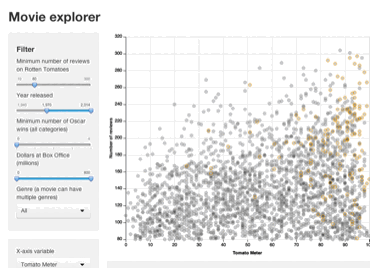

Introduction à Shiny
Shiny est un package qui permet de créer facilement des applications web interactives, entièrement en R, sans nécessité de connaissances en HTML, CSS ou JavaScript. Il fournit un ensemble d’outils puissants pour concevoir des interfaces dynamiques et réactives, facilitant ainsi l’exploration et la visualisation des données en temps réel. Les applications Shiny peuvent être ensuite déployées localement, sur un server ou via des plateformes comme ShinyApps.io, permettant ainsi de partager des analyses avec d’autres utilisateurs de manière simple et efficace.

Origine
Ce framework web, gratuit et open source, a été annoncé en 2012 par Joe Cheng, directeur technique de Posit (anciennement RStudio). Conçu pour simplifier le développement d’applications web interactives, il était initialement disponible en R, mais depuis 2022, il peut également être utilisé avec Python. L’un des usages courants de Shiny est le prototypage rapide.
Structure logicielle qui fournit un ensemble d’outils, de bibliothèques et de bonnes pratiques pour faciliter le développement d’applications. Il sert de socle sur lequel nous pouvons construire un projet sans repartir de zéro.
Capacité à concevoir et à tester rapidementt des applications, sans avoir à passer par un développement web traditionnel impliquant HTML, CSS, JS …
L’implémentation distincte de Shiny annoncé en 2022 ne vise pas à remplacer la version R. Les deux versions sont développées en parallèle et pourraient ne jamais inclure les mêmes fonctionnalités.
Avantages
Shiny est beaucoup plus utilisé qu’on ne le pense. Entreprises, chercheurs, institutions académiques ou encore organisations gouvernementales l’utilisent pour créer des applications web interactives.
En effet, Shiny est gratuit et open-source ce qui en fait un outil accessible et flexible. Développer une application interactive et visuellement attrayante devient relativement simple lorsqu’on maîtrise R 😉. Dans le cas échéant, pas d’inquiétude, de nombreux exemples et templates existent. Vous pourrez les réutiliser et les adapter à votre projet.
Un des principaux avantages de Shiny est qu’il est basé sur R et intégré à RStudio, ce qui permet d’incorporer toutes les fonctionnalités d’analyse de R dans les applications.”
Enfin, les applications sont complètement personnalisables avec du HTML et du CSS, qui sont les langages de base pour la création de pages web.
En revanche, Shiny est spécifiquement conçu pour R, ce qui peut poser des difficultés pour ceux qui ne sont pas familiers avec ce langage. De plus, comparé à d’autres frameworks, Shiny peut être un peu limité en termes de personnalisation du front-end et de scalabilité.
Comment ça marche ?
Tout d’abord, le code d’une application Shiny est contenu dans un fichier au format
.R. L’anatomie de ce fichier est particulière, aucune inquiétude, elle est en réalité très simple.Elle se divise en deux parties principales :
User Interface (ui) : Cette partie regroupe tous les éléments visibles par l’utilisateur, tels que le titre, les composants, la mise en forme, les boutons… Concrètement, dans le langage des développeurs, c’est le
frontde l’application. C’est tout ce que l’utilisateur de l’application voit et avec quoi il interagit. Cette partie contrôle la présentation et l’apparence de l’application.Server function (server) : La partie
servercontient toutes les instructions nécessaires au fonctionnement de l’application. Dans le langage des développeurs, elle correspond auback-end`, c’est-à-dire la partie de l’application qui gère la logique, les calculs et les données. Elle contient le code qui définit comment réagir aux actions de l’utilisateur.L’instruction
shinyApp(ui, server)permet de lancer une application Shiny en combinant l’interface utilisateur (ui) et la logique serveur (server). Lorsqu’on exécute cette commande, l’application Shiny démarre et devient interactive.On se retrouve ici pour un tutoriel et pour réaliser votre première application !